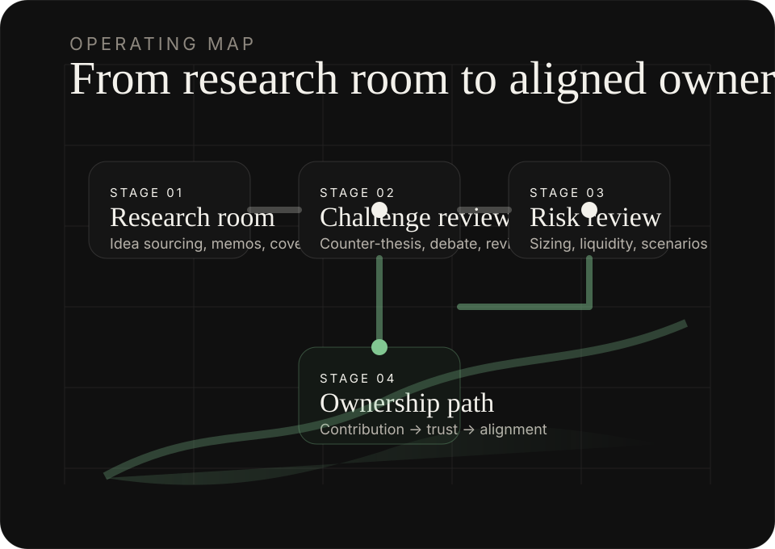

Find signal.
Turn community research into structured, reviewable investment work.
Tannenhof Mayer is building an investment firm around research quality, disciplined risk management, and a long-term ownership path for the people who raise the standard.
Turn community research into structured, reviewable investment work.
Design sizing, exposure limits, and review rituals before risk arrives.
Build a long-term ownership path for contributors who compound trust and judgment.
Thesis
Tannenhof Mayer starts with a simple belief: intelligent capital requires intelligent rooms. The first step is to gather people who can write clearly, challenge assumptions, and stay disciplined when markets become noisy.
Every idea should be written, challenged, and measured against explicit assumptions.
Position sizing, concentration, and downside planning are part of the thesis from day one.
Community ownership should follow demonstrated judgment, trust, and consistency.
Static-site friendly charts rendered directly in the browser. Values are sample data designed to demonstrate layout and interaction.
The first version of the firm is not a fund product. It is an operating discipline: idea generation, challenge, risk review, and accountability.
Sector, company, macro, and special-situations rooms with written work as the default language.
Ideas are improved by critique, counter-arguments, and documented pressure-testing.
Sizing, concentration, liquidity, and downside scenarios are reviewed before conviction scales.
Contributors who repeatedly improve the room earn deeper trust, responsibility, and long-term alignment.
We are looking for people who can think clearly, write clearly, challenge assumptions, and stay calm. Analysts, operators, engineers, founders, students, and disciplined generalists are all welcome if they raise the bar.

The Discord is the first operating layer of Tannenhof Mayer: research, introductions, review, and the early standards of the firm.